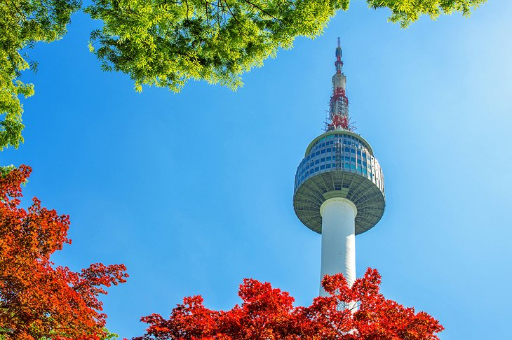

Jeju Island
In this page, you will get to know why I'd love to go to Jeju island.
Introduction
Jeju Island (Korean: 제주도; Hanja: 濟州島; Korean pronunciation: [t͡ɕed͡ʑudo]) is the largest island in South Korea, located in the Jeju Province (Jeju Special Self-Governing Province.). The island covers an area of 1833.2 km², which is 1.83 percent of the total area of South Korea. In 2020, the resident registration population is about 670,000, the largest among the islands in South Korea.
The island lies in the Korea Strait, below the Korean Peninsula, south of the South Jeolla Province. Jeju is the only self-governing province in South Korea, meaning that the province is run by local inhabitants instead of politicians from the mainland.
Jeju Island has an oval shape of 73 km east-west and 31 km north-south, with a gentle slope around Mt. Halla in the center. It is 181 kilometers long and 258 kilometers long. The northern end of Jeju Island is Kimnyeong Beach, the southern end is Songak Mountain, the western end is Suwolbong, and the eastern end is Seongsan Ilchulbong. It's the Yellow Sea and East China Sea, East Sea border South Korea's economic and political as well as in military also an important position.
History
The earliest known polity on the island was the kingdom of Tamna. After Mongol invasions of Korea, the Mongol Empire established a base on Jeju Island and converted part of the island to a grazing area for the Mongol cavalry stationed there. In the beginning of the 15th century, Jeju Island was subjected to the highly centralized rule of the Joseon dynasty. A travel ban was implemented for almost 200 years and many uprisings by Jeju Island residents were suppressed.
Photo Album
“Lingxiao Xie”
“Hyeop-Jae Beach”
“Mt. Hallasan in spring”
More sights in South Korea
"Seoul Tower"
"Seoraksan National Park"

"Gyeongbokgung Palace"

"Jeju Island"